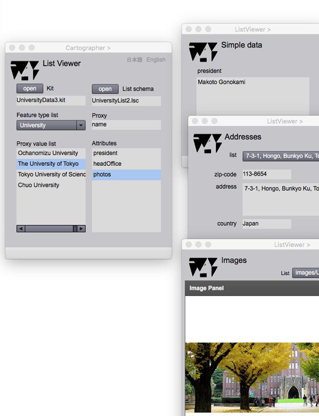

List Viewer
リスト表示
リストとはこの場合，実世界に存在する現象を抽象化して示す，一次元表現である．リストスキーマによって示されるルールに従って，地物のproxyをキーワードとして，様々な属性を表示することができます．
List Viewer

図１．Cartographer のページ，リスト表示 (List Viewer) のページ及び，属性表示ページ（画像，住所）
Fields
Kit
リスト表示の対象となる kit のファイル名が表示されます．
List schema
kitをのリスト表示ルールを示すリストスキーマの名前がここに示されます．
Feature type
Kitの中にある，リストの対象となる地物型の名前がここに示されます．
Proxy
リストの対象になる地物型のproxyの名前がここに示されます．
Proxy value list (selectable)
Proxyの値の一覧がここに示されます．このリストが，地物の一次元地図です．このリスト上で，地物を選択すると，その地物の属性値を表示することができます．
Attributes (selectable)
地物属性の一覧から，一つ選択すると，その属性の値を示すページが現れます．
Buttons
open (Kit)
このボタンを押すと，リスト表示の対象となる kit がオープンします．
open (List schema)
このボタンを押すと，リスト表示の規則を示すリストスキーマ がオープンします．
日本語
今あなたが読んでいるドキュメントが表示されます．
English
You can read the tutorial written in English.